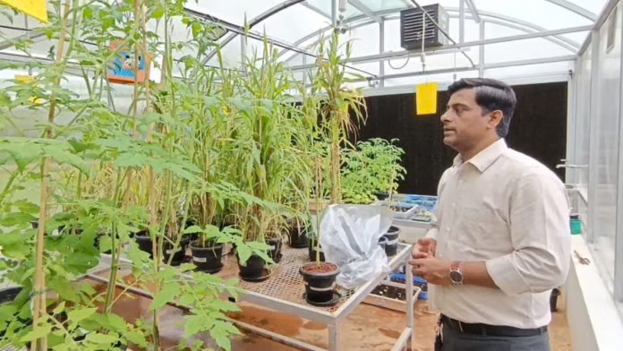
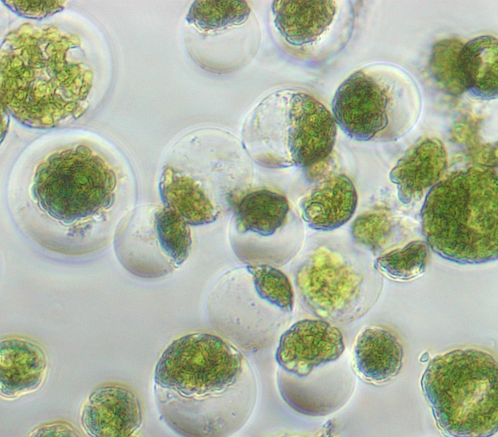
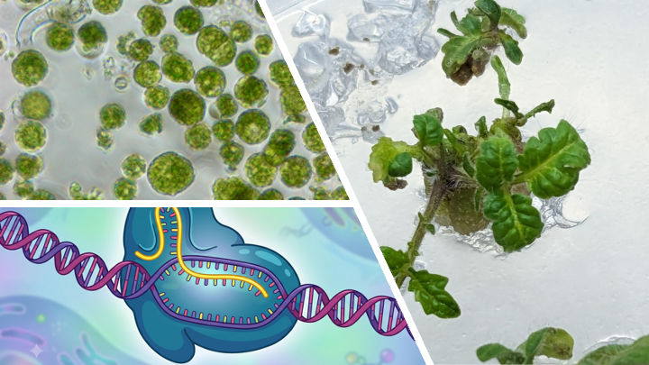
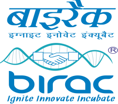
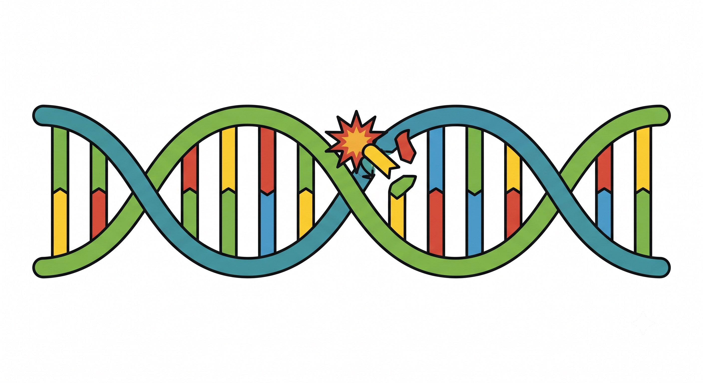
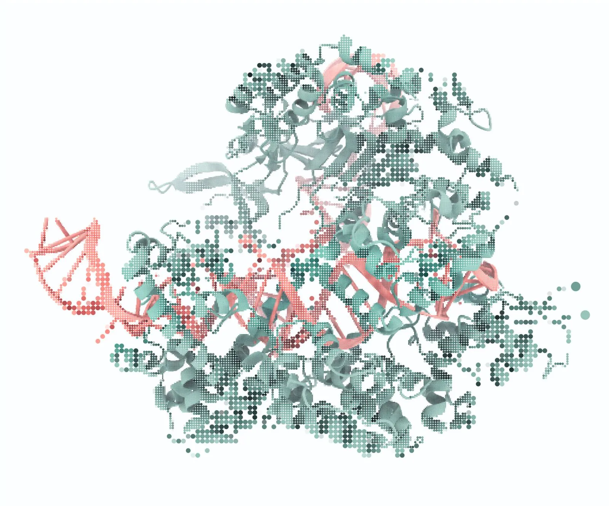
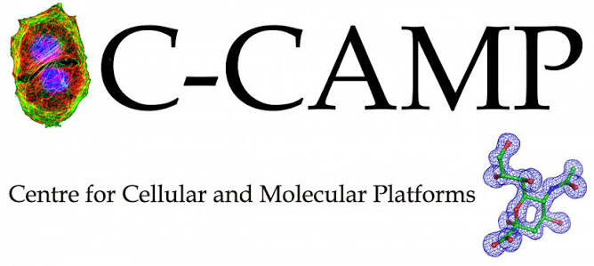
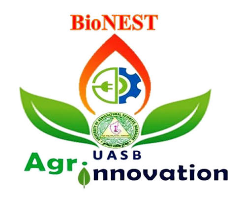

Ground Reports
July 04, 2025
Vitacrop Technologies harnesses advanced genetic tools to accelerate crop improvement, enabling the development and selection of superior genetics for more productive, resilient, and sustainable agriculture.
Vitacrop Technologies Pvt. Ltd. is an agribiotech company developing advanced genetics and technologies to accelerate the discovery, validation, and development of valuable agronomic traits in crops.
We pair genomic data with advanced tools to compress the traditional breeding timeline and cost by one-third, accelerating evolution of naturally occurring traits for better and rapid adaptation, entirely within the plant's own genome.

A four-stage pipeline takes each trait from data to a regenerated, validated crop.

We integrate genomic, biological, and phenotypic insights to identify and prioritize genetic targets associated with valuable agronomic traits.

Intracellular delivery of CRISPR-Cas reagents to make targeted edits on discovered loci — no foreign DNA remains in cell after editing.

Robust pipeline for the transformation & regeneration, fertile plantlets ready for greenhouse.

Multi-location trials confirm trait performance under real agronomic and climate conditions.
We apply our trait development pipeline to the staple and cash crops that matter most for regional food security and farmer profitability.

DSR adapted cultivar for better environment and sustainable rice productivity. Better grain quality for targeted premium market segment.

Minimizing loss caused by disease outbreaks and extreme weather conditions.

Reduce bollworm damage and pesticide dependency; Boosting operational efficiency & fiber quality to increase farmer's profitability.

Boosting Disease resistance in Ragi and preventing lodging to ensure enough productivity of the 'Superfood'.

Increased resistance to multiple diseases in corn to ensure increased income for farmers.

Sustained grain fill under water-limited, high-temperature conditions.

Trait edits raise seed oil content while maintaining pod-shatter tolerance.
Let’s work together to develop better genetics for the traits that matter most.
Start a conversation →



Vitacrop is supported by leading government initiatives, biotechnology ecosystems, and agricultural innovation institutions.


Interested in our platform capabilities or exploring collaboration opportunities? Connect with our technical team.
HD-275, 10th Floor, WeWork RMZ Latitude Commercial
Hebbal Kempapura
Bengaluru – 560024
Karnataka, INDIA
Vitacrop Technologies Pvt. Ltd.
C-CAMP, GKVK Post, Bellary Road
Bengaluru – 560065
Karnataka, INDIA
info@vita-crop.com